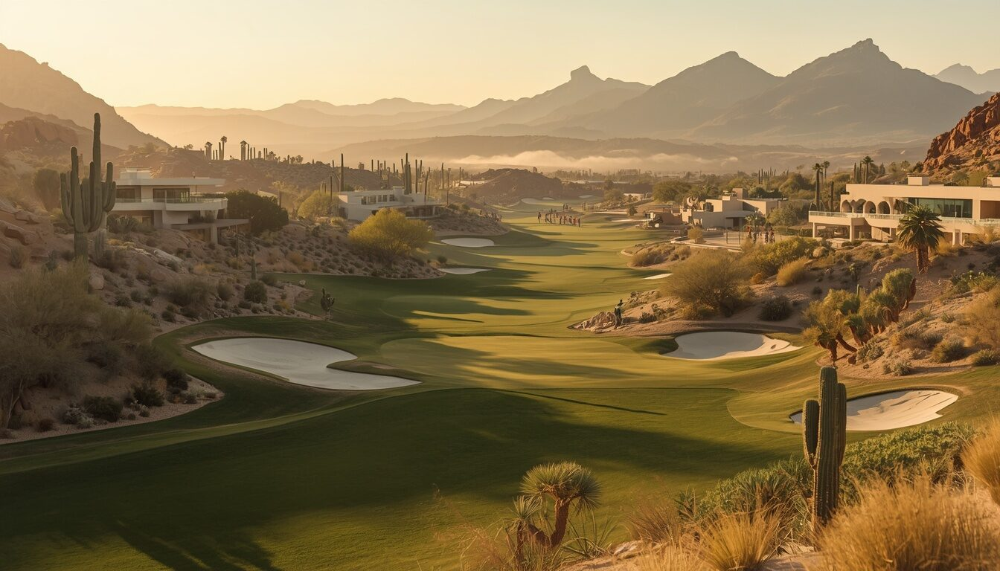
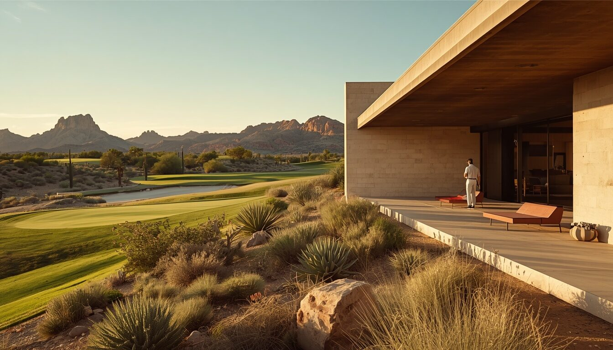

Story & Place
The land came first.
Canyon House began with a question: how little could be added while still creating a complete golf destination?
Fictional demonstration property with sample content and reference imagery.
The project was drawn around what was already there—existing contours, native vegetation, and view corridors—shaping strategic golf and shaded architecture while keeping the visual footprint low.
Where the ground moved, the holes moved with it. Where the desert was strongest, it was left to define the edges of play. The result is a course and a house that feel found rather than imposed.

Architecture
Built to frame the desert, not compete with it.
Low horizontal buildings, pale stone, deep shade, and courtyards frame the view rather than block it. Material restraint keeps the eye on the land.
Landscape
A narrower line between course and desert.
Maintained turf is concentrated where play requires it. Native areas define the holes, and the transition between course and desert is drawn with care.

Stewardship principles
- 01Build with the contoursLet the existing ground shape the routing and the buildings.
- 02Concentrate maintained turfTurf where play requires it; native ground everywhere else.
- 03Preserve native transitionsKeep the edges between course and desert intact.
- 04Design shade before decorationComfort comes from architecture, not ornament.
Principles shown are fictional sample content and do not represent measured environmental data or certifications.

At the end of the day, the desert remains.
The course, the architecture, and the hospitality are all designed to sharpen the experience of the place—not replace it.